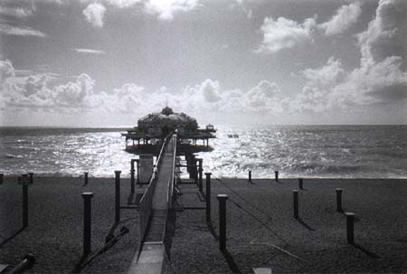
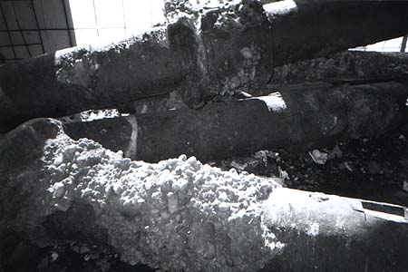
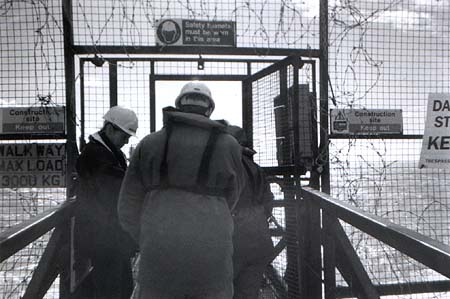

Jeremy Day >> Projects >>
| Take a promenade along West Pier Since the partial collapse of part of one pier in Brighton, and the partial destruction by fire of another, I've been feeling the importance of preserving what yet remains of pier and promenade on Brighton Beach, one of the very best beaches in England. It's pebbly, slopes steeply into the unfriendly grey waters of the channel, and it's crowded with chip shops, tat shops and sullen artists. On top of that, it's usually wet and windy. But under the veneer of plastic you can still see the bones of its former grandeur, a cast-iron Victorian dream of endless holiday; the seaside the sun will never set on. At West Pier, abandoned and sealed off for years, the bones lie closest to the surface. Come on in and see the final decay of the Victorian seaside fantasy, with extra added pigeon shit! |
| Into the sun The West Pier was separated from the mainland bit by bit. The part connecting it to the promenade (I'm standing there taking the photo) was the last to go. The posts jutting out of the pebbles used to hold up the deck of the Pier. |
| Down below The tour started (and ended) with an instructive talk in the locked-off space under the stump of the pier. It was was full of rescued pieces of the pier, in varying states of decay. These are some of the ancient support poles, encrusted with rust and barnacles. |
|
Safety helmets must be worn in this area
Access to the pier is now along a slender metal walkway, locked behind a razor-wire encrusted gate covered with signs threatening imminent doom to trespassers. But we're here legally, so in we go. |